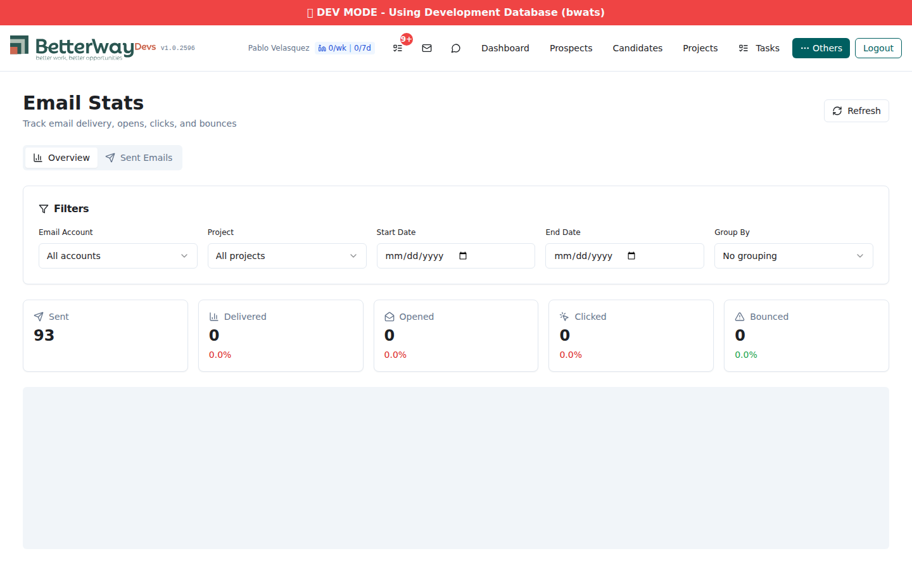
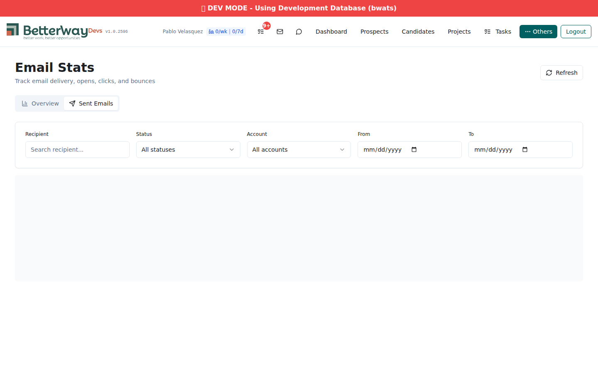
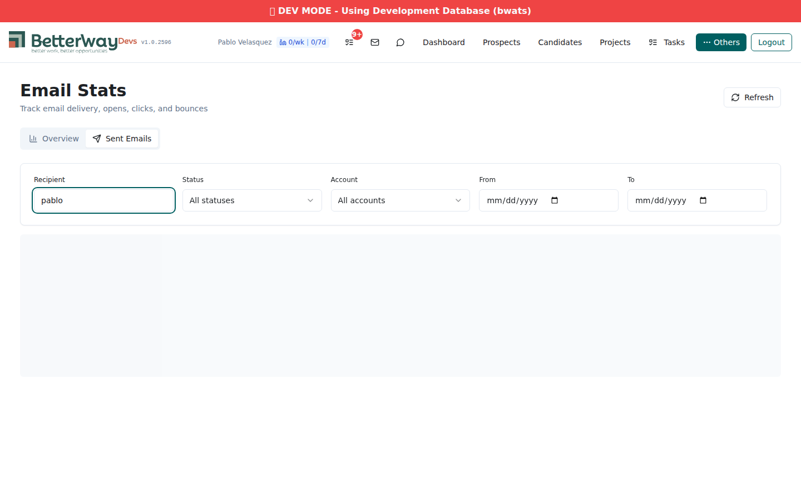

Date: 2026-02-28 | Agent: qa-tester | Round 2 (post-bugfix re-test with screenshots)
Two Xano API endpoints (email_send_log and email_stats_timeseries) were not published to the :development branch. They exist and work on the base API, but the frontend builds URLs with the :development suffix, so both return ERROR_CODE_NOT_FOUND. This makes the Sent Emails tab completely non-functional and the Weekly Trends chart empty.
Previous bugs (BUG-1, BUG-2) from round 1: Both fixed in commit ac6b9eb. Code verified.
To unblock: Backend developer must publish email_send_log and email_stats_timeseries to the Xano development branch. No frontend changes needed.
Impact: Sent Emails tab is completely empty — no email records display.
Root Cause: The endpoint exists on api:2CPT0xvS/email_send_log (base URL) but was NOT published to api:2CPT0xvS:development/email_send_log. The frontend uses the :development suffix, so the request returns a 404-equivalent error.
# Works (base URL, 122 records): $ curl "https://xano.atlanticsoft.co/api:2CPT0xvS/email_send_log?per_page=5" \ -H "Authorization: Bearer $TOKEN" -H "X-Data-Source: development" → {"items": [...], "pagination": {"total": 122, "total_pages": 25}} # Fails (:development — what frontend uses): $ curl "https://xano.atlanticsoft.co/api:2CPT0xvS:development/email_send_log?x-data-source=development&per_page=5" \ -H "Authorization: Bearer $TOKEN" → {"code":"ERROR_CODE_NOT_FOUND","message":"Unable to locate request."}
Fix: Publish email_send_log endpoint to the Xano development branch.
Impact: Weekly Trends chart on the Overview tab renders empty.
Root Cause: Same as BUG-3 — endpoint exists on base URL but not on :development.
# Works (base URL): $ curl "https://xano.atlanticsoft.co/api:2CPT0xvS/email_stats_timeseries?period=week" \ -H "Authorization: Bearer $TOKEN" -H "X-Data-Source: development" → {"period":"week","data":[...5 weekly data points...]} # Fails (:development): $ curl "https://xano.atlanticsoft.co/api:2CPT0xvS:development/email_stats_timeseries?x-data-source=development&period=week" \ -H "Authorization: Bearer $TOKEN" → {"code":"ERROR_CODE_NOT_FOUND","message":"Unable to locate request."}
Fix: Publish email_stats_timeseries endpoint to the Xano development branch.
Field name mismatch between API and frontend breakdown. Fixed with normalizeBreakdownItem() mapping in emailStatsApi.ts.
Account filter not applied to breakdown query. Fixed with client-side filtering in emailStatsApi.ts.
Page loads at /email-stats. Summary cards show correct data: Sent (93), Delivered (0), Opened (0), Clicked (0), Bounced (0) — all 0.0% rates (expected: no webhook events received in dev). Filters panel renders all 5 controls. Tab navigation works.
Chart area present but empty due to BUG-4 (timeseries endpoint not found on :development).

Overview tab: summary cards render with live data, filters visible, chart area empty
Tab switches correctly. Filter controls render (Recipient search, Status dropdown, Account dropdown, From/To date pickers). However, no email records display — the table is entirely absent due to BUG-3.

Sent Emails tab: filter controls work, but no data loads (BUG-3: endpoint 404 on :development)
Recipient search input accepts text. Cannot verify filtering behavior since no data loads.

Recipient filter accepts input, but no data to filter (BUG-3)
Verified infrastructure (from round 1):
email_event table — stores resend_message_id, event_type, recipient, bounce details, raw payloadprocess_email_event function — parses email.delivered/opened/clicked/bounced/complained eventswebhook/resend_inbound endpoint — routes delivery events to process_email_event alongside existing opt-out logicNo live webhook data in dev environment (expected — Resend webhooks fire in production).
delivery_status — progressive update: sent → delivered → opened → clickeddelivered_at, opened_at, clicked_at — timestamp trackingopen_count, click_count — engagement counters$ curl "https://xano.atlanticsoft.co/api:2CPT0xvS:development/email_stats?x-data-source=development" \
-H "Authorization: Bearer $TOKEN"
{"summary":{"total_sent":93,"total_delivered":0,"total_opened":0,
"total_clicked":0,"total_bounced":0,"delivery_rate":0,
"open_rate":0,"click_rate":0,"bounce_rate":0},
"filters":{...},"breakdown":[]}
Works on :development branch. Returns correct summary data.
# Base URL — works (122 records): $ curl "https://xano.atlanticsoft.co/api:2CPT0xvS/email_send_log?per_page=5" \ -H "Authorization: Bearer $TOKEN" -H "X-Data-Source: development" {"items":[{"id":122,"recipient":"pablo@betterway.dev", "subject":"M1 Sticky Test v3 - Email B (should be sticky)", "status":"sent","delivery_status":"","sent_at":1772294289094,...},...], "pagination":{"page":1,"per_page":5,"total":122,"total_pages":25}} # :development URL — FAILS: $ curl "https://xano.atlanticsoft.co/api:2CPT0xvS:development/email_send_log?x-data-source=development" → {"code":"ERROR_CODE_NOT_FOUND","message":"Unable to locate request."}
# Base URL — works: $ curl "https://xano.atlanticsoft.co/api:2CPT0xvS/email_stats_timeseries?period=week" \ -H "Authorization: Bearer $TOKEN" -H "X-Data-Source: development" {"period":"week","data":[ {"period_start":"2026-01-26","total_sent":0,...}, {"period_start":"2026-02-16","total_sent":18,...}, {"period_start":"2026-02-23","total_sent":75,...} ]} # :development URL — FAILS: → {"code":"ERROR_CODE_NOT_FOUND","message":"Unable to locate request."}
$ curl -s -o /dev/null -w "%{http_code}" \ "https://xano.atlanticsoft.co/api:2CPT0xvS:development/email_stats?x-data-source=development" → 401 $ curl -s -o /dev/null -w "%{http_code}" \ "https://xano.atlanticsoft.co/api:2CPT0xvS/email_send_log" -H "X-Data-Source: development" → 401
$ npx vite build ✓ built in 27.24s dist/assets/index-Cn7I_eah.js 3,281.87 kB │ gzip: 900.08 kB No errors.
| Test Case | Result | Notes |
|---|---|---|
| AC1: Webhook event capture | PASS | email_event table, process_email_event function, webhook routing all in place |
| AC2: Delivery status tracking | PASS | delivery_status, timestamps, counters all added to email_send_log |
| AC3a: Overview summary cards | PASS | 5 cards render with correct data (93 sent, 0 delivered/opened/clicked/bounced) |
| AC3b: Weekly trends chart | FAIL | BUG-4: timeseries endpoint not on :development branch |
| AC3c: Sent emails table | FAIL | BUG-3: email_send_log endpoint not on :development branch |
| AC3d: Filters UI | PASS | All filter controls render correctly on both tabs |
| AC3e: Status badges | BLOCKED | Cannot test — no data in table (BUG-3) |
| AC3f: Pagination | BLOCKED | Cannot test — no data in table (BUG-3) |
| AC3g: Row expansion | BLOCKED | Cannot test — no data in table (BUG-3) |
| AC4: Profile engagement | DEFERRED | Not implemented — accepted as deferred scope |
| BUG-1 fix (field mapping) | FIXED | normalizeBreakdownItem() in emailStatsApi.ts (commit ac6b9eb) |
| BUG-2 fix (filter leak) | FIXED | Client-side filtering in emailStatsApi.ts (commit ac6b9eb) |
| Auth enforcement | PASS | 401 returned without auth token on all endpoints |
| Frontend build | PASS | Clean build, 27.24s, no errors |